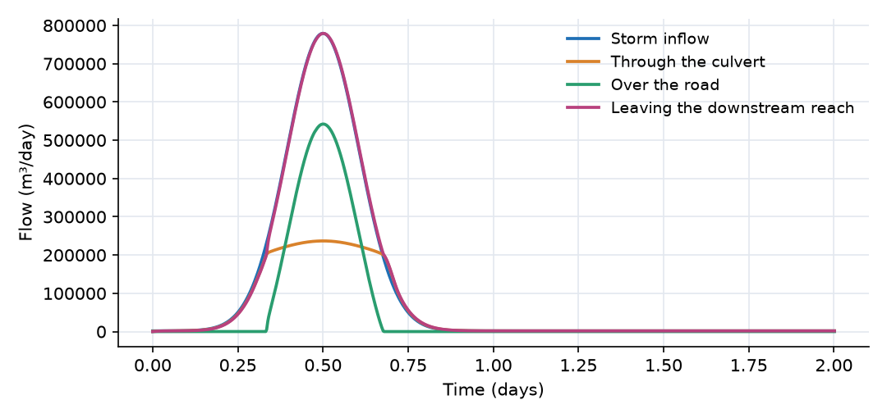
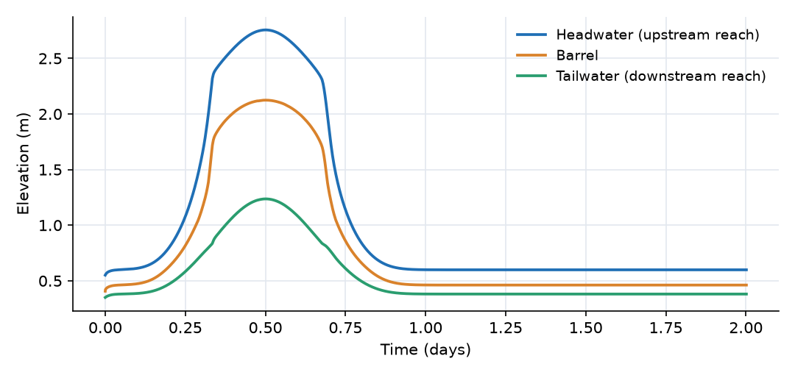
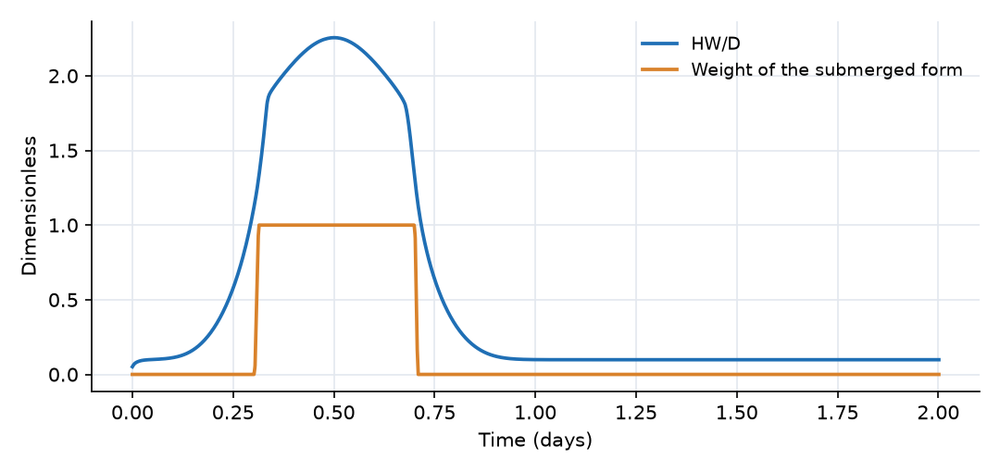

What this model represents
A road crosses a small stream on an embankment, and the stream passes under the road through a single 1.0 m concrete pipe culvert. Every culvert analysis asks the same questions: for a given flood, how high does the water rise upstream (the headwater), which part of the structure limits the flow, and does the road overtop?
The main model (T4_roadway_overtopping.ohq) answers these for an extreme storm with a 9 m³/s peak, about three times the pipe's capacity. The download also contains ten smaller companion models, T1 to T11, each of which isolates one culvert behavior. Together they form the verification set for the culvert components. They are listed in the table below and documented in the technical guide (PDF).
How it works
The crossing is built from three objects in series, plus a road link in parallel:
US_Channel → Inlet → Barrel → Outlet → DS_Channel → Tailwater → Outfall US_Channel → Road → DS_Channel
Channel reaches. Each trapezoidal reach is one storage cell. Its depth follows from storage S, length L, base width b and side slope z:
d = (−b + √(b² + 4·z·S/L)) / (2·z), head h = z_bed + d
Barrel. The barrel is also a storage cell. The wetted fraction u = S/S_full, with S_full = N·L·πD²/4, gives the depth through a polynomial fit to the circular section. Once the barrel runs full, extra volume is stored in a narrow virtual slot above the crown (a Preissmann slot of width σ·D, σ = slot_width_ratio = 0.05), which converts pressure head into a stage:
h = (z_inlet + z_outlet)/2 + d(u) + max(S − S_full, 0) / (N·L·σ·D)
The barrel friction loss coefficient is f = 2g·n²·L / R^(4/3), with R the hydraulic radius of the wetted section.
Inlet link (inlet control). HDS-5 expresses inlet control through the discharge parameter q* = K_u·Q / (A·D^0.5), with K_u = 1.811 in SI units. With HW the headwater depth above the inlet invert and S₀ the barrel slope:
- Unsubmerged (Form 1): HW/D = H_c/D + K·q*^M − 0.5·S₀, where H_c is the specific head at critical depth. The link solves it for q* with four fixed-point iterations through the critical-flow function of the circular section.
- Submerged: HW/D = c·q² + Y − 0.5·S₀, so q = √((HW/D − Y + 0.5·S₀)/c).
- The two forms are blended by a weight that ramps from 0 to 1 as the submerged q* goes from 3.5 to 4.0, which bridges the gap HDS-5 leaves between them.
The inlet link then passes
Q = min(Q_inlet, |Q_entrance|) · sign(Q_entrance), Q_inlet = N·q*·A·D^0.5 / K_u, Q_entrance = N·A·√(2g·Δh / k_e)
where Δh is the head difference between the upstream reach and the barrel (each floored at the inlet invert) and A is the full barrel area. Here K = 0.0098, M = 2.0, c = 0.0398, Y = 0.67 (HDS-5 Table A.1, circular concrete, square edge with headwall) and k_e = 0.5.
Outlet link (outlet control). Between the barrel and the downstream reach:
Q = A·√(2g·(h_barrel − TW) / (k_x + f))
with k_x = 1.0. When the barrel is deep (barrel head above the outlet invert between 0.75·D and 1.8·D), the tailwater TW is progressively raised to at least the HDS-5 grade line z_outlet + (d_c + D)/2, where d_c is the critical depth at the current flow. This represents outlet control with a low tailwater.
Because the entrance loss (k_e) and the barrel and exit losses (k_x + f) sit on two links with the barrel storage between them, the steady-state result equals the single HDS-5 outlet-control equation HW = TW + (k_e + k_x + f)·V²/2g.
Road link. Flow over the embankment is a broad-crested weir:
Q_road = k_t·C_r·B·[max(h_up − z_crest, 0)^1.5 − max(h_down − z_crest, 0)^1.5]
with C_r = 1.7 (SI), B = 12 m, z_crest = 2.3 m and k_t = 1 (no submergence correction).
Sign convention. All links are positive from upstream to downstream. Negative values mean reverse flow, which T6 exercises.
Units. Flows in the model and in the output are in m³/day (1 m³/s = 86,400 m³/day), lengths in m, time in days.
The test cases
Every case except T7 and T10 uses the same reaches, barrel and links as the main model, without the road link. The results below come from running each model with the current OpenHydroQual release. "Closure" is the volume balance over the structure (inflow − outflow − change in storage) as a fraction of the inflow volume.
| Case | Model file | Condition | What it verifies | Result |
|---|---|---|---|---|
| T1 | T1_inlet_control.ohq |
0.8 m³/s storm, free outfall | Unsubmerged inlet control (HDS-5 Form 1) | HW/D peaks at 0.75; the submerged weight stays 0; inlet control governs throughout |
| T2 | T2_submerged_inlet.ohq |
3.2 m³/s storm | Submerged inlet, barrel surcharge through the slot | HW/D 2.78, q* 7.3; the barrel surcharges about 1.0 m above the crown |
| T3 | T3_outlet_control_tailwater.ohq |
0.8 m³/s storm, outfall level rising to 1.9 m | Switch from inlet to outlet control as the tailwater drowns the outlet | Inlet control governs about 60% of the time, outlet control the rest |
| T4 | T4_roadway_overtopping.ohq (main) |
9.0 m³/s storm, road crest 2.3 m | Roadway overtopping in parallel with a surcharged culvert | 0.46 m over the crest, 6.3 m³/s over the road, 51% of the storm volume |
| T5 | T5_box_multibarrel.ohq |
9.0 m³/s storm, three 1.5 m × 1.2 m box cells | Box section, multiple barrels, box inlet coefficients (K = 0.026, M = 1.0, c = 0.0347, Y = 0.81) | Carries the full 9.0 m³/s with HW/rise 0.99 |
| T6 | T6_reverse_flow.ohq |
Small storm, then an outfall surge to 2.55 m | Flow reversal through the outlet and inlet | Flow reverses to −0.093 m³/s; the barrel surcharges 1.15 m |
| T7 | T7_lumped_vs_routed.ohq |
3.2 m³/s storm, two independent crossings | Single-link Circular Culvert versus the storage-routed barrel |
Peak flows and volumes agree to better than 0.01% |
| T8 | T8_dry_to_dry.ohq |
1.2 m³/s square pulse, 3 days | Wetting from dry and full drain-down | Returns to dry with no negative storage; closure 0.002% |
| T9 | T9_steep_slope.ohq |
0.8 m³/s storm, 5% barrel slope | Steep barrel, strong inlet control | Inlet control throughout; barrel depth never above 43% of the diameter |
| T10 | T10_water_quality.ohq |
0.8 m³/s storm with a 50 g/m³ tracer pulse | Constituent transport through the inlet, barrel and outlet | Peak concentration 50.0 g/m³ upstream and in the barrel, 49.6 g/m³ downstream |
| T11 | T11_outlet_control_hgl.ohq |
3.2 m³/s storm, 60 m corrugated barrel (n = 0.024) on a 0.17% slope | The (d_c + D)/2 grade line rule | Rule active on 57% of flowing steps; the effective tailwater rises from 0.52 m to 1.37 m |
Volume closure is better than 0.02% for every case except T6 (0.26%), where a sharp surge arrives against a nearly empty barrel. All models cap the solver time step at 0.0025 day (3.6 minutes) through max_timestep_increase_factor. With the default cap of 0.025 day the steps are too coarse to follow the boundary time series, and the volume balance of T3 degrades to about 1.8%.
What to look for in the results
- The inlet caps the culvert flow. The culvert flow levels off near 2.7 m³/s while the inflow keeps rising to 9 m³/s. At the peak, HW/D = 2.26 and the submerged inlet equation gives q* = √((2.26 − 0.67 + 0.005)/0.0398) = 6.3, so Q = 6.3 × 0.785 m² × (1 m)^0.5 / 1.811 = 2.74 m³/s, which matches the output.
- Overtopping from t = 0.33 to 0.68 day. At the peak the headwater is 2.76 m, 0.46 m above the crest, and the weir carries 1.7 × 12 × 0.456^1.5 = 6.28 m³/s. Over the event, 51% of the volume crosses the road.
- The road limits the headwater. Although the inflow is three times the pipe capacity, the headwater rises only 0.46 m above the crest, because weir capacity grows with the 1.5 power of head.
- Surcharge. The barrel stage rises above its crown (mean invert 0.4 m plus 1.0 m) by up to 0.72 m, through the Preissmann slot.
- Inlet control throughout. The downstream reach stays below 1.24 m, so the outlet never limits the flow. The regime plot shows the switch to the submerged inlet form and back.
- Little attenuation. The two reaches store only a few hundred cubic meters, so the outflow hydrograph closely follows the inflow.
Assumptions and limitations
- Each reach and the barrel are single storage cells. There is no water-surface profile in the barrel (no M1, M2 or S2 curves, no hydraulic jump), and on steep slopes the barrel depth comes from its volume, not from normal depth.
- The fit for the wetted perimeter of a circular barrel is about 5% low at full flow, which raises the friction-controlled capacity by about 3%. Inlet control is not affected.
- The (d_c + D)/2 rule is ramped in between 0.75 and 1.8 barrel rises, a wider band than HDS-5 implies, for numerical robustness.
- The Preissmann slot is a numerical device. It slightly inflates stored volume once the barrel surcharges.
- The roadway weir uses a constant coefficient and no tailwater submergence correction (k_t = 1). In T4 the downstream reach never reaches the crest, so this has no effect here.
- The downstream boundary is a fixed level. A real downstream channel would raise its stage with flow, which pushes a culvert toward outlet control (as T3 shows).
- All hydrographs are synthetic.
Model diagram
Hover a block or link to see its name and type. Arrows show the positive flow direction.
Components
Click a component to see every property set in the model file, with units and meaning.
Blocks 4
Storage compartments: each holds water (and dissolved or particulate mass) and has a state that evolves in time.
US_ChannelTrapezoidal Channel Segment · open_channelUpstream (headwater) channel reach, 100 m long, trapezoidal with a 3 m base width, side slopes of 2 horizontal to 1 vertical, Manning n = 0.035 and bed at 0.5 m. The storm hydrograph enters here. Its water level is the culvert headwater.
Trapezoidal Channel Segment: Trapezoidal Channel Segment
| Property | Value | Unit | Meaning |
|---|---|---|---|
| Base Width | 3 | m | The width of the bottom (flat) portion of the trapezoidal channel cross-section. |
| Side Slope | 2 | The horizontal to vertical ratio of the sloped sides (e.g., 2 means 2 horizontal to 1 vertical). | |
| Manning's Roughness Coefficient | 0.035 | Roughness coefficient used in Manning's equation to estimate flow resistance. | |
| Bottom Elevation | 0.5 | m | Elevation of the channel bottom relative to the model’s vertical datum. |
| Segment length | 100 | m | |
| Initial Water Depth | 0.05 | m | Depth of water in the channel segment. If depth is initially unknown, it is estimated based on storage. |
| Inflow time series | inflow_extreme.csv | m^3/day | |
| Inflow multiplier | 1 | Scales the inflow time series (for example an uncertain lateral inflow estimate). 1 uses the series as given. | |
| Obstacle height | 0 | m | The water depth below which the flow ceases |
| Area of agriculural land | 0 | m2 | |
| Area of non-agriculural activity | 0 | m2 |
BarrelCulvert Barrel (Circular) · culvertOne circular concrete pipe, 1.0 m diameter and 20 m long, inverts at 0.5 m (inlet) and 0.3 m (outlet), n = 0.013. A storage block, so it can fill, run full and surcharge.
Culvert Barrel (Circular): Storage-routed circular culvert barrel placed between two open channel segments
| Property | Value | Unit | Meaning |
|---|---|---|---|
| Number of barrels | 1 | Number of identical barrels installed side by side. Storage, flow area and capacity all scale with this number. | |
| Barrel diameter | 1.0 | m | Internal diameter of a single barrel. |
| Barrel length | 20 | m | Length of the barrel along its axis. Sets the barrel storage volume and the friction loss. |
| Inlet invert elevation | 0.5 | m | Elevation of the barrel invert at the upstream face, on the same vertical datum as the connected channel segments. |
| Outlet invert elevation | 0.3 | m | Elevation of the barrel invert at the downstream face, on the same vertical datum as the connected channel segments. |
| Manning's roughness coefficient | 0.013 | Barrel roughness. Typical values: 0.012-0.013 concrete, 0.024 corrugated metal. | |
| Effective inlet crest width factor | 0.65 | Fraction of the diameter used as the effective crest width in the unsubmerged inlet-control rating of the attached inlet link. The default of 0.65 reproduces the HDS-5 unsubmerged inlet-control curve for a square-edged circular pipe to within about 10 percent over 0<HW/D<1. | |
| Preissmann slot width ratio | 0.05 | Width of the virtual slot above the barrel crown, as a fraction of the diameter. The slot converts surcharged (pressurized) flow into an equivalent free-surface stage so the barrel can build head above its crown. Smaller values are more physically accurate but stiffer to solve. | |
| Initial Water Depth | 0 | m | Water depth in the barrel measured above the reference invert. Supplied as an initial condition; thereafter it is recovered from the barrel storage by inverting the circular area-depth relation (accurate to about 0.5 percent of the diameter). |
DS_ChannelTrapezoidal Channel Segment · open_channelDownstream (tailwater) channel reach, same cross-section as the upstream reach, bed at 0.3 m.
Trapezoidal Channel Segment: Trapezoidal Channel Segment
| Property | Value | Unit | Meaning |
|---|---|---|---|
| Base Width | 3 | m | The width of the bottom (flat) portion of the trapezoidal channel cross-section. |
| Side Slope | 2 | The horizontal to vertical ratio of the sloped sides (e.g., 2 means 2 horizontal to 1 vertical). | |
| Manning's Roughness Coefficient | 0.035 | Roughness coefficient used in Manning's equation to estimate flow resistance. | |
| Bottom Elevation | 0.3 | m | Elevation of the channel bottom relative to the model’s vertical datum. |
| Segment length | 100 | m | |
| Initial Water Depth | 0.05 | m | Depth of water in the channel segment. If depth is initially unknown, it is estimated based on storage. |
| Inflow multiplier | 1 | Scales the inflow time series (for example an uncertain lateral inflow estimate). 1 uses the series as given. | |
| Obstacle height | 0 | m | The water depth below which the flow ceases |
| Area of agriculural land | 0 | m2 | |
| Area of non-agriculural activity | 0 | m2 |
Outfallfixed_headFixed water level of 0.35 m at the end of the downstream reach, 5 cm above its bed, so in practice a free outfall.
fixed_head: Fixed-head boundary
| Property | Value | Unit | Meaning |
|---|---|---|---|
| Head | 0.35 | m | |
| Initial Storage | 100000 | m3 |
Links 4
Connections that move water (and the mass it carries) between blocks.
InletChannel_to_culvert (Circular) · culvertEntrance of the culvert. Passes the smaller of the HDS-5 inlet-control capacity and the entrance-loss limited flow (k_e = 0.5). Coefficients are for a circular concrete pipe, square edge with headwall.
Channel_to_culvert (Circular): Inlet transition from an open channel segment to a circular culvert barrel (HDS-5 inlet control plus entrance loss)
| Property | Value | Unit | Meaning |
|---|---|---|---|
| Entrance loss coefficient | 0.5 | Head loss coefficient at the culvert entrance (HDS-5 ke). Typical values: 0.2 grooved end or bevelled edge with headwall, 0.5 square edge with headwall, 0.9 projecting corrugated pipe. | |
| HDS-5 inlet control K | 0.0098 | Coefficient K from HDS-5 Table A.1 (Constants for Inlet Control Design Equations), for the specific barrel shape, material and inlet edge configuration. The default corresponds to circular concrete pipe, square edge with headwall (Chart 1, scale 1). VERIFY this value against Table A.1 for your inlet before using the result in a design submittal. | |
| HDS-5 inlet control M | 2.0 | Exponent M from HDS-5 Table A.1, paired with K for the same inlet configuration. | |
| HDS-5 inlet control c | 0.0398 | Coefficient c from HDS-5 Table A.1, used by the submerged inlet-control equation. | |
| HDS-5 inlet control Y | 0.67 | Coefficient Y from HDS-5 Table A.1, paired with c for the same inlet configuration. | |
| Unsubmerged equation form (1 = Form 1, 0 = Form 2) | 1 | Set to 1 when HDS-5 Table A.1 lists the inlet as equation Form (1), which adds the specific head at critical depth to the headwater. Set to 0 for Form (2). Most circular and box entries in Table A.1 are Form (1). | |
| Barrel slope correction coefficient | 0.5 | Coefficient of the barrel slope term in the HDS-5 inlet-control equations. HDS-5 applies -0.5S for all inlets except mitered inlets, which use +0.7S; enter 0.5 for the normal case and -0.7 for a mitered inlet. |
OutletCulvert_to_channel (Circular) · culvertExit of the culvert. Barrel friction plus exit loss (k_x = 1.0), with the HDS-5 (d_c + D)/2 tailwater rule applied when the barrel is deep.
Culvert_to_channel (Circular): Outlet transition from a circular culvert barrel to an open channel segment (barrel friction, exit loss, and the HDS-5 (dc+D)/2 hydraulic grade line rule)
| Property | Value | Unit | Meaning |
|---|---|---|---|
| Exit loss coefficient | 1.0 | Head loss coefficient at the culvert exit. A value of 1.0 represents full loss of the barrel velocity head into the receiving channel; use a smaller value when the outlet is well transitioned into a channel of similar section. | |
| Lower limit of the (dc+D)/2 rule, as a headwater ratio | 0.75 | Barrel headwater ratio (head above the outlet invert divided by the barrel rise) below which the HDS-5 (dc+D)/2 hydraulic grade line rule is not applied at all. HDS-5 Section 3.2.2 states the approximate method should not be used if the inlet is unsubmerged and gives adequate results only down to a headwater of 0.75D, which is this default. | |
| Upper limit of the (dc+D)/2 rule, as a headwater ratio | 1.8 | Barrel headwater ratio at which the (dc+D)/2 rule is applied in full; between the two limits it is ramped in linearly. HDS-5 treats the rule as fully applicable above about 1.2D, but applying it that abruptly makes the outlet rating curve non-monotonic and admits up to three simultaneous steady states, because the grade line rises faster than the driving head. A band of at least 1.05 in headwater ratio is needed to keep the rating single-valued; 1.8 is that minimum with margin. |
Tailwaterchannel2fixed · open_channelManning flow from the downstream reach to the outfall level.
channel2fixed: Link from a channel segment to fixed head boundary
RoadRoadway_Overtopping · culvertThe road embankment over the culvert, crest at 2.3 m and 12 m long, acting as a broad-crested weir from the upstream to the downstream reach.
Roadway_Overtopping: Weir flow over the roadway embankment, connecting the upstream and downstream channel segments directly
| Property | Value | Unit | Meaning |
|---|---|---|---|
| Road crest elevation | 2.3 | m | Elevation of the low point of the roadway over the culvert. No flow occurs until the water surface rises above this elevation. |
| Overtopping width | 12 | m | Crest length of the roadway acting as a weir, measured perpendicular to the flow direction. |
| Roadway weir coefficient | 1.7 | Free-flow roadway discharge coefficient Cr in HDS-5 Equation 3.9, Qo = Cd*L*HWr^1.5. HDS-5 gives Cr graphically in Figure 3.11A (deep overtopping) and 3.11B (shallow), and notes Cd(SI) = 0.552*Cd(English); the default of 1.7 corresponds to the deep-overtopping value of about 3.1 in US units. | |
| Roadway submergence correction factor kt | 1 | Correction factor kt for downstream submergence of the roadway crest, read from HDS-5 Figure 3.11C. It is 1.0 for a free overfall and falls towards zero as the tailwater encroaches on the crest. HDS-5 gives it as a graph, so it is entered rather than computed; check road_submergence_ratio in the results to see whether it matters for your event. |
Input files
inflow_extreme.csv | Inflow to the upstream reach of the main model (T4): a Gaussian storm peaking at 9.0 m³/s at t = 0.5 day on a 0.02 m³/s base flow. Time in days, flow in m³/day, every 0.005 day. Synthetic. Also used by T5. |
T1_inlet_control.ohq | Companion model T1 (see the table of test cases). |
T2_submerged_inlet.ohq | Companion model T2. |
T3_outlet_control_tailwater.ohq | Companion model T3. |
T5_box_multibarrel.ohq | Companion model T5. |
T6_reverse_flow.ohq | Companion model T6. |
T7_lumped_vs_routed.ohq | Companion model T7. |
T8_dry_to_dry.ohq | Companion model T8. |
T9_steep_slope.ohq | Companion model T9. |
T10_water_quality.ohq | Companion model T10. |
T11_outlet_control_hgl.ohq | Companion model T11. |
inflow_moderate.csv | Same shape, 0.8 m³/s peak (T1, T3, T9, T10). Time in days, flow in m³/day. |
inflow_large.csv | Same shape, 3.2 m³/s peak (T2, T7, T11). Time in days, flow in m³/day. |
inflow_small.csv | Small storm, 0.1 m³/s peak at t = 0.3 day on a 0.01 m³/s base flow (T6). Time in days, flow in m³/day. |
inflow_pulse.csv | Square pulse of 1.2 m³/s from t = 0.2 to 0.5 day, zero otherwise (T8). Time in days, flow in m³/day. |
tailwater_rise.csv | Outfall water level (m) rising from 0.35 m to 1.90 m and back, peak at t = 0.55 day (T3). Time in days. |
surge.csv | Outfall water level (m) with a sharp surge from 0.35 m to 2.55 m at t = 1.0 day (T6). Time in days. |
tracer_in.csv | Tracer concentration in the upstream inflow (g/m³), 50 g/m³ from t = 0.30 to 0.45 day, zero otherwise (T10). Time in days. |
Simulation settings
| Start time | 0 |
| End time | 2 |
| Initial time step | 0.0005 |
| Write interval (steps) | 20 |
| Newton-Raphson tolerance | 0.001 |
Results
Produced by running the downloaded model unchanged.


